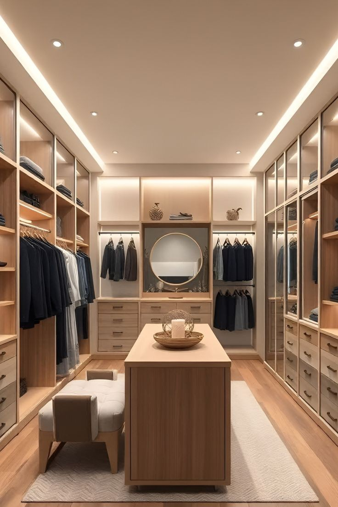

FONDO 400 MMFondo 400 — Espacios Reducidos
Espacios reducidos
Sin puertas
Ideal para vestidores compactos, pasillos de vestidor o conceptos abiertos donde se privilegia la amplitud de circulación peatonal y entrepaños a la vista.